Europa-Rosarium
If you're a rose lover, the Europa-Rosarium in Sangerhausen, Germany is a must-see. This isn't just any rose garden—it's the largest in the world, spread over a whopping 12 hectares. Imagine strolling through a living encyclopaedia of roses, with over 8,500 varieties waiting to be admired. From ancient species to the latest hybrids, it's like a history lesson and a botanical feast rolled into one.
Butchart Gardens
Over a century ago, Jennie Butchart, the wife of a cement tycoon, stood in the middle of a barren limestone quarry and saw not desolation but potential.
While her husband was busy with the family’s industrial empire, Jennie had an artistic vision—she would transform the ugly remains of industry into a flourishing paradise. She hired Japan’s best garden designers, imported thousands of plant species, and spent decades planting luxurious flowers, from cascading roses to exotic shrubs.
Her first and most famous creation, the Sunken Garden, became a floral fantasy, attracting visitors from all over the world. Today, 900+ rose varieties spill over the terraces, while charming fountains, secret paths, and picturesque viewpoints make this garden feel like stepping into a fairytale.
A true example of turning something forgotten into something unforgettable, Butchart Gardens remains one of Canada’s most iconic and breathtaking attractions.
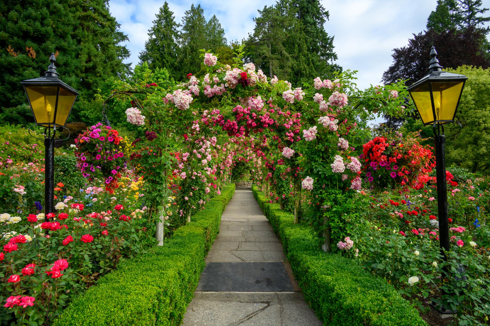
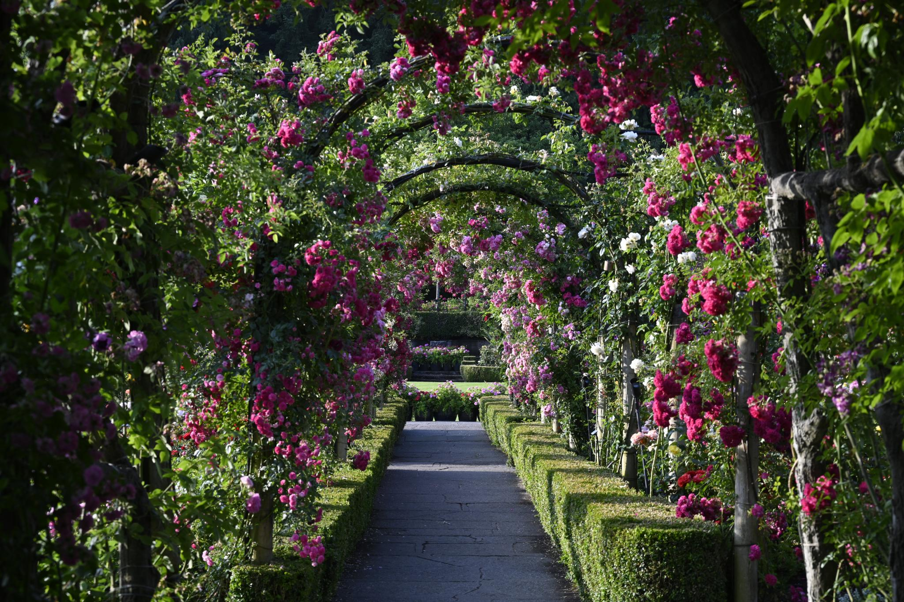
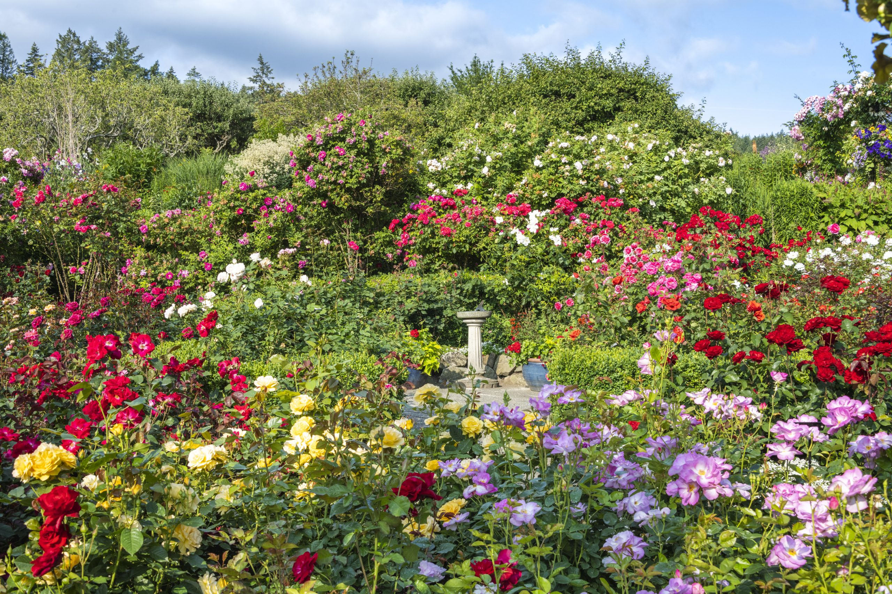
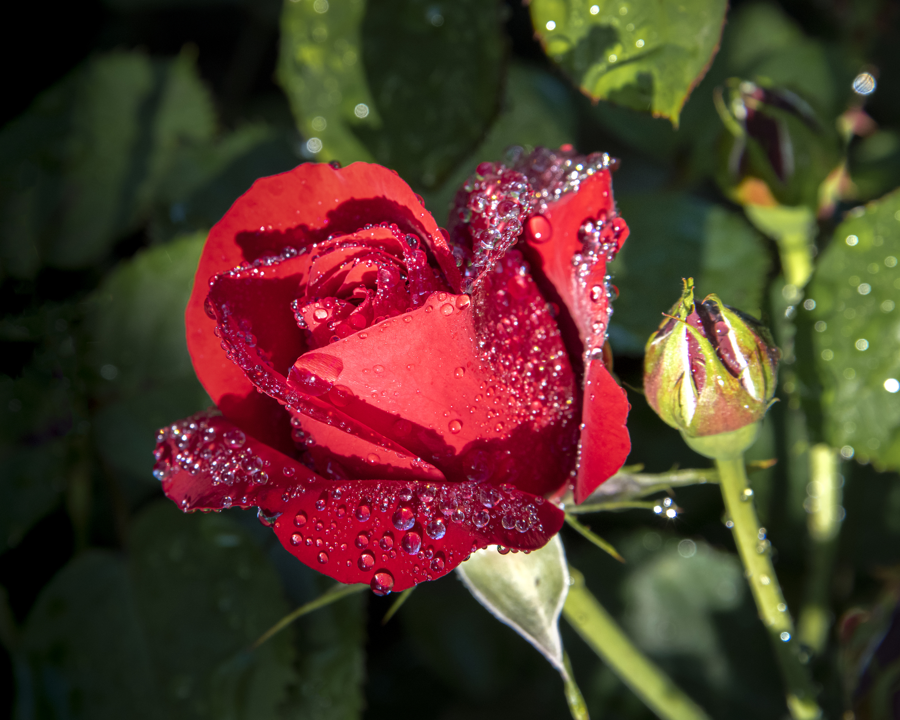
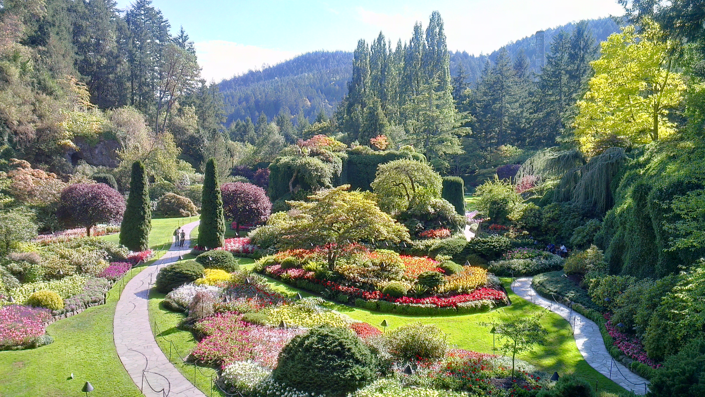

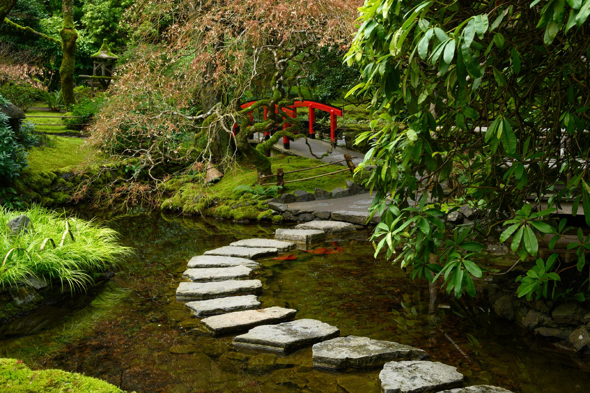
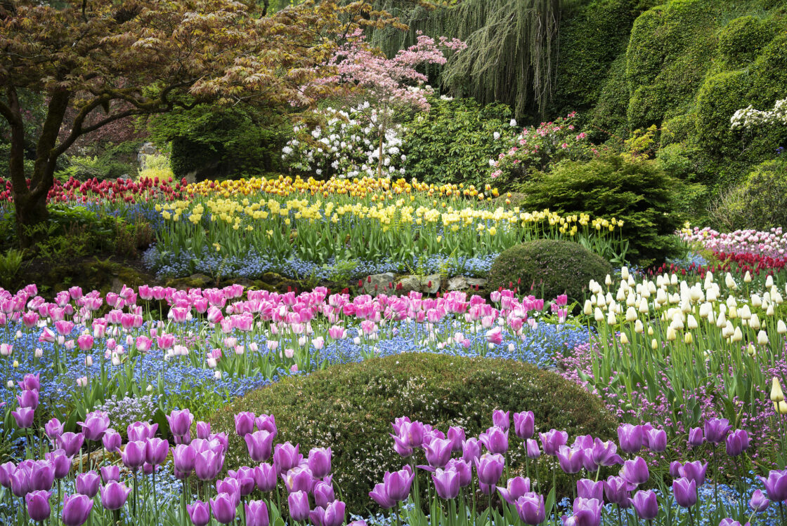
Mottisfont's Abbey Garden
Graham Stuart Thomas wasn’t just a gardener; he was a rose rescuer, historian, and artist. A celebrated horticulturist and writer, he believed that many old rose varieties were in danger of disappearing forever.
He made it his life’s work to collect and preserve them, and in 1972, he found the perfect place: Mottisfont Abbey, a historic estate with medieval roots.
With its ancient stone walls and wisteria-clad archways, the abbey provided an ethereal backdrop for his collection of historic roses, many of which had been nearly lost to time.
Today, visitors experience an overwhelming wave of scent as they stroll through the garden in June, with rare varieties like ‘Madame Hardy’ and ‘Souvenir de la Malmaison’ creating an unforgettable floral spectacle.
Les Chemins de la Rose
Nestled in the heart of the Loire Valley, Les Chemins de la Rose is a love letter to the rose itself. Created by renowned French breeder François Dorieux, this garden wasn’t built to impress royalty or accompany a grand château—it was built out of sheer passion for roses and their endless variety. Dorieux, known for his work in hybridizing new and resilient rose species, dreamed of a place where visitors could walk among thousands of blooms and experience the full range of their beauty.
Today, with over 13,000 rose bushes, this countryside retreat feels like an open-air art gallery, where nature is the artist. The winding paths, wooden pergolas draped in 100 roses, and a mix of rare and modern varieties make this a sensory wonderland. Unlike highly structured formal gardens, Les Chemins de la Rose embraces a more natural, poetic aesthetic, allowing each majestic flower to shine in its own way.

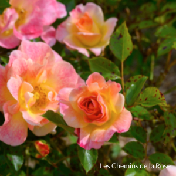
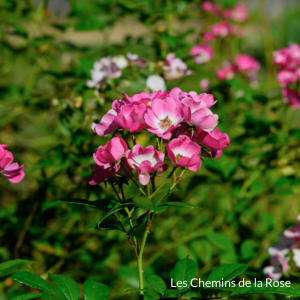
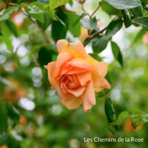
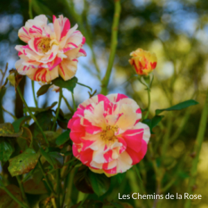
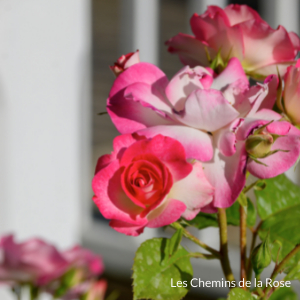
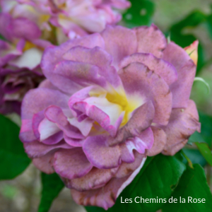

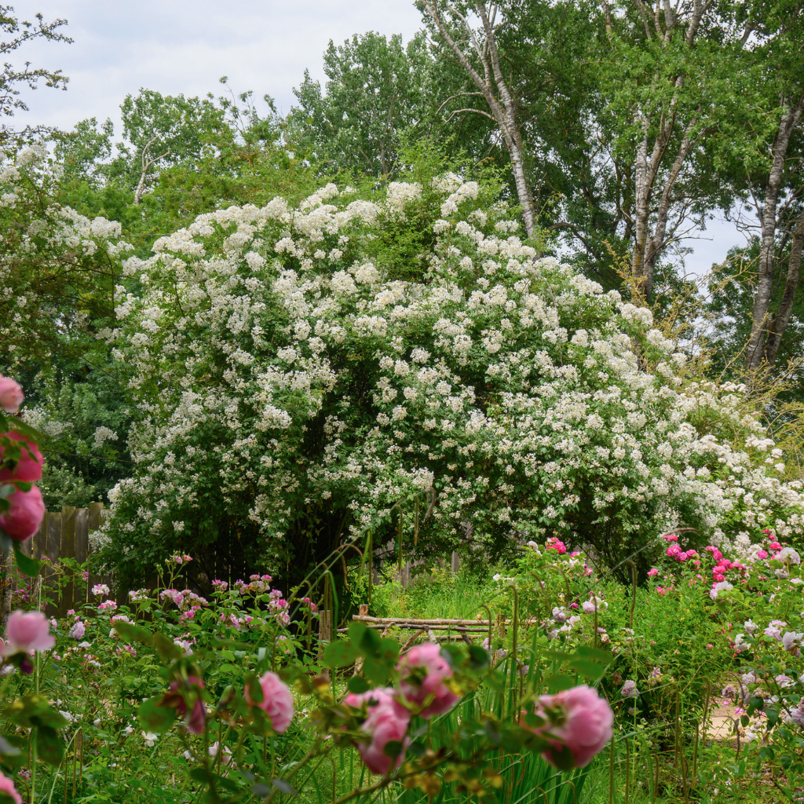
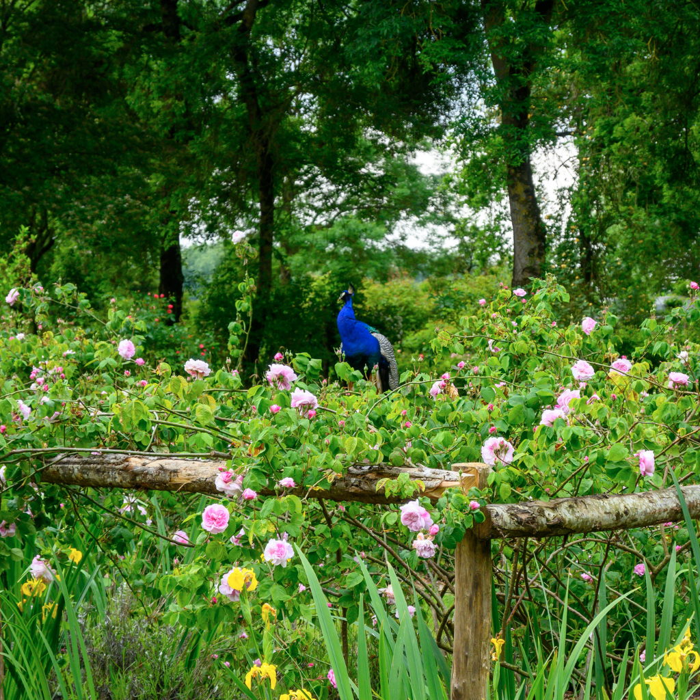